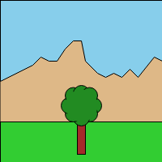

g2 has no limits. Think of a 2D coordinate system with infinite range in x- and y-direction. This is our user coordinate system with coordinate values we have in mind. Then we finally need to coincide this user coordinate system with some renderers coordinate system - the device coordinate system. That device viewport is usually rectangular and limited of course. Its coordinate origin lies in the viewports upper left corner, is lefthanded with x-axis to the right and y-axis down and its positive rotation is clockwise, as usual in computer graphics.
So we want to displace the origin of our user coordinate system - named View - relative to the renders rigid one. We also want to scale the user units, wich initially also coincide with the device units - think of pixels here.
The view method manipulates the current view state relevant for the next rendering process via the exe() command.
| Method | Comment |
|---|---|
view({scl,x,y,cartesian}) |
Implicitely set the View transformation uniformly by setting absolute scaling factor scl and origin at x,y in device units each. The cartesian property is boolean and switches the cartesian coordinate system mode on or off. The origin is placed initially in the viewport's lower left corner, x-axis right and y-axis up and positive rotation counterclockwise. |
This output is generated by the follwing code addressing different renderer contexts.
world = g2().view(worldview)
.rec({x:0,y:0,b:200,h:200,fs:"skyblue"})
.ply({pts:[0,100,40,...],fs:"burlywood"})
.rec({x:0,y:0,b:200,y:150,fs:"limegreen"}),
tree = g2().view(treeview)
.rec({x:-5,y:0,b:10,h:40,fs:"brown"})
.beg({fs:"forestgreen"})
.cir({x:15,y:-20,r:10})
...
.cir({x:0,y:-20,r:20,ls:"transparent"})
.end();
g2().use({grp:world,x:0,y:0})
.use({grp:tree,x:100,y:150})
.exe(ctx1)
g2().use({grp:world,x:0,y:0})
.view({x:0,y:-50,scl:1.5})
.use({grp:tree,x:100,y:150})
.exe(ctx2)
g2().view({x:0,y:-50,scl:1.5})
.use({grp:world,x:0,y:0})
.use({grp:tree,x:100,y:150})
.exe(ctx3)
 

Remark that view could be omitted here and the same picture could be generated just with use. This is for demonstation purpose only.
Please note that g2 does not support all affine view transformations. It allows similarity transformations as translation, uniform scaling as well as reflection with respect to x-axis. It does not support nonuniform scaling, rotation or shearing of its View.